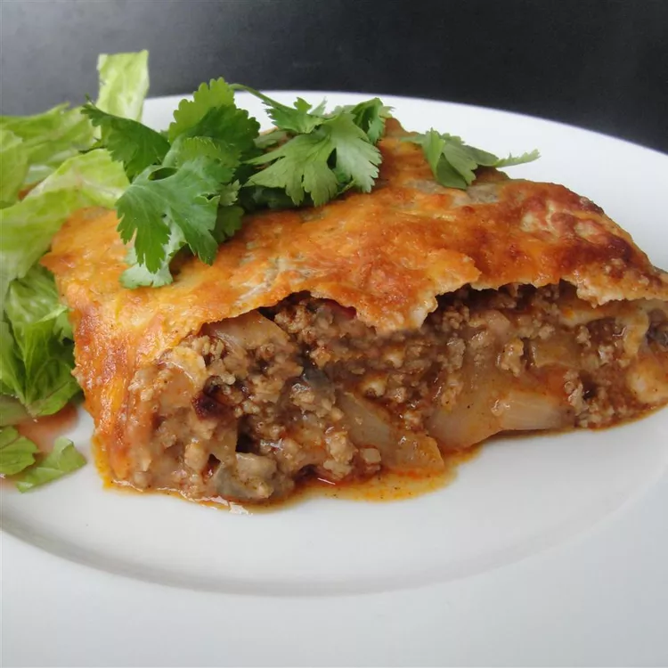
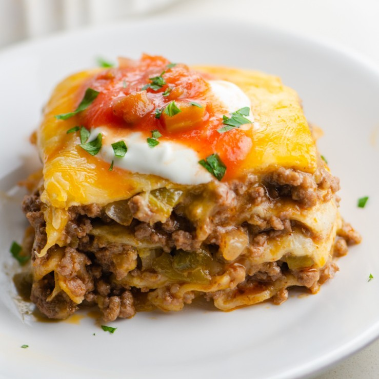

Mexican Casserole
Made with Spanish rice for a nice vegetarian meal

Description
This Mexican casserole is made with pantry staples including a can of refried beans, an onion, tortillas, salsa, and shredded Cheddar cheese.
Ingredients
- 1 (16 ounce) can refried beans
- ¾ onion, diced
- 5 (10 inch) flour tortillas
- 1 cup salsa
- 2 cups shredded Cheddar or Colby Jack cheese
Directions
- Preheat oven to 375 degrees F (190 degrees C).
- Then spray a 9-inch pie pan with non-stick cooking spray.
- In a saucepan, cook refried beans and onions (to soften them) on medium-high heat for about 5 minutes.
- Place one tortilla in the bottom of the greased pan. Spread about 1/3 cup of the bean mixture over it. Layer a few tablespoons of salsa over this.
- Then, place another tortilla over the salsa, and add more of the bean mixture.
- On the top layer, make sure to use lots of salsa and cheese!
- Enjoy your meal!
